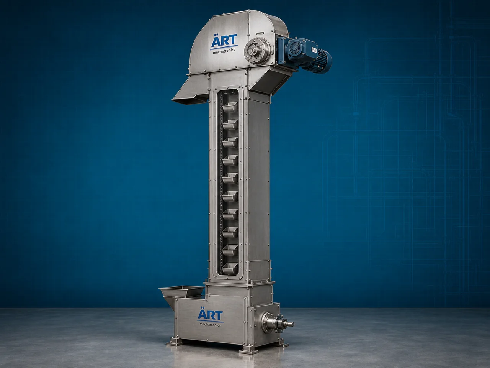

Bucket Elevator Machine (Industrial Vertical Bulk Material Handling & Conveying System)
A Bucket Elevator Machine, also known as a Bucket Conveyor Elevator or Industrial Bucket Elevator System, is a highly efficient vertical material handling equipment designed for continuous lifting and conveying of powders, granules, grains, pellets, seeds, cement, fertilizers, chemicals, food…

About the Bucket Elevator
Bucket elevator systems are widely used for: ✔ Vertical bulk material conveying ✔ Continuous industrial material lifting ✔ Grain and powder handling ✔ High-capacity bulk transfer ✔ Automated plant material movement ✔ Dust-free vertical conveying
The machine improves: ✔ Material handling efficiency ✔ Production automation ✔ Factory space optimization ✔ Labor reduction ✔ Product transfer speed ✔ Continuous process flow
Unlike conventional conveyors, bucket elevators use: ✔ Industrial buckets ✔ Belt or chain drive systems ✔ Vertical conveyor structures ✔ Controlled discharge mechanisms
to transport materials vertically with high efficiency and minimal product loss.
Bucket elevator machines are widely used in industries such as:
Food processing industries
Grain processing plants
Flour mills
Cement industries
Chemical industries
Fertilizer industries
Rice mills
Mining industries
where continuous vertical bulk material transportation is essential.
The machine is highly suitable for: ✔ Grain lifting ✔ Powder conveying ✔ Cement transfer ✔ Seed handling ✔ Fertilizer conveying ✔ Bulk material elevation
ART Mechatronics offers high-performance bucket elevator machines, engineered for continuous industrial operation, heavy-duty vertical conveying, energy-efficient material handling, and reliable long-term performance.
Working Principle of Bucket Elevator Machine
Powders, grains, granules, or bulk materials are fed into bucket elevator inlet section
Motor-driven belt or chain rotates buckets continuously along vertical conveyor structure
Buckets scoop and lift materials upward automatically
Machine conveys: ✔ Powders ✔ Grains ✔ Seeds ✔ Pellets ✔ Cement ✔ Fertilizers ✔ Food ingredients efficiently to elevated discharge points.
Bucket arrangement ensures: Smooth material handling Continuous lifting Low material spillage Efficient product transfer
Materials discharged through: Centrifugal discharge Gravity discharge Continuous bucket discharge systems depending on application.
Bucket elevator integrates with: Silos Mixers Packaging machines Conveyors Storage systems
Types of Bucket Elevator Machines
- 1. Belt Bucket Elevator
Uses: ✔ Belt-driven bucket conveying system for medium-duty applications.
- 2. Chain Bucket Elevator
Suitable for: ✔ Heavy-duty industrial bulk material handling
- 3. Centrifugal Discharge Bucket Elevator
Designed for: ✔ High-speed bulk material discharge applications
- 4. Continuous Bucket Elevator
Suitable for: ✔ Fragile and delicate material handling systems
- 5. Food Grade Bucket Elevator
Designed for: ✔ Hygienic food and pharmaceutical industries
- 6. Heavy Duty Industrial Bucket Elevator
Used for: ✔ Cement, mining, and fertilizer industries
Industries Using Bucket Elevator Machines
🌾 Grain Processing Industry Grain and seed lifting systems 🍃 Food Processing Industry Food ingredient conveying systems 🏗️ Cement Industry Cement and clinker handling systems ⚗️ Chemical Industry Powder and granule lifting systems 🌱 Fertilizer Industry Fertilizer granule conveying systems 🌾 Flour Mill Industry Flour and grain transfer systems ⛏️ Mining Industry Mineral and ore lifting systems 🍚 Rice Mill Industry Paddy and rice handling systems
Features & Advantages
✔ Efficient vertical bulk material conveying ✔ Continuous industrial operation ✔ Suitable for powders, grains, and granules ✔ Heavy-duty industrial construction ✔ Space-saving vertical conveyor design ✔ Low material spillage and dust generation ✔ High-capacity material handling capability ✔ Energy-efficient operation ✔ Easy integration with industrial automation systems
Technical Highlights
Elevator Type: Belt bucket elevator Chain bucket elevator Continuous bucket elevator Construction: Stainless Steel / Mild Steel Bucket Material: Steel buckets Plastic buckets Food-grade buckets Discharge Type: Centrifugal discharge Gravity discharge Drive System: Geared motor drive Chain drive system Automation: Semi-automatic Fully automatic PLC-based systems
Turnkey Bucket Elevator Solutions
ART Mechatronics offers: Complete bucket elevator systems Vertical bulk material handling solutions Silo and conveyor integration systems Food and industrial automation systems Installation & commissioning After-sales service & AMC
Why Choose Art Mechatronics
Expertise in industrial bulk material handling systems Customized bucket elevator solutions for multiple industries High-performance and durable industrial construction Energy-efficient and reliable conveying systems Proven industrial performance across sectors
Applications
Grain Processing Plants Food Processing Industries Cement Plants Chemical Industries Fertilizer Plants Rice Mills
Industries that use the Bucket Elevator
Related Conveying & Handling machines
Get pricing & specs for the Bucket Elevator
Share the product, target capacity, current process and plant location. These details help our engineers discuss the right machine or line configuration.
One partner, from design to start-up
ART Mechatronics designs, manufactures, installs and commissions your Bucket Elevator solution with regional presence in India, UAE and Thailand.